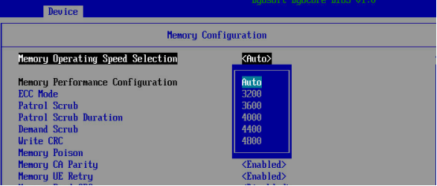

概述
同 CPU 管理一样，内存管理也是操作系统最核心的功能之一。内存主要用来存储系统和应用程序的指令、数据、缓存等。
1.提高命中率
2.降低伪共享
3.多路处理器架构中，连接到CPU本地内存相对于远程CPU访存时延更低，因此内存本地性也是个重要因素
监控分析工具
| 工具 | 说明 |
|---|---|
| free | 系统已用、可用、剩余内存和缓存、交换 |
| /proc/meminfo | 系统已用、可用、剩余内存和缓存、巨页 |
| top ps | 进程虚拟、常驻、共享内存以及缺页异常 |
| slabtop | 系统slab缓存使用情况 |
| vmstat | 虚拟内存和物理内存统计信息 |
| pidstat | 进程/线程内存、缓存信息 |
| sar | 历史统计信息 |
| swapon | 交换设备使用率 |
| numactl | NUMA分配管理 |
| numastat | NUMA分析 |
| perf | 内存PMC和跟踪点分析 |
优化方法
内存条选配
内存主频
理论上提高内存条主频，性能会提升。但是也有可能造成性能下降，需要结合实际业务情况选择合适的主频。
可以在bios设置内存主频，步骤如下：

内存刷新速度
刷新速度会导致访存时延的差异。一般来说，不同容量的内存条内存颗粒不同，不同内存颗粒的刷新速度不同，选择内存条时可以关注这些指标。
内存插法
不同的内存插法会影响访存时延。ZF芯片每个die4个通道，每个通道最多可插两根内存条。
当每个通道都满插（2dpc）时，默认的内存主频会下降，除非在bios里强制指定内存主频。半插（1dpc）时，默认的内存主频是内存条可支持最大主频。
4个通道全插的延时是最小的。而3个通道的延时，已插通道相关的core的延时较低，距离较远的延时较大，差距可达8ns左右。一般来说4通道优于2通道，优于1通道，优于3通道。
内核可调参数
| 选项 | 说明 |
|---|---|
| vm.dirty_background_bytes | 触发pflush后台回写的脏内存字节数 |
| vm.dirty_background_ratio | 触发pflush后台回写的脏内存所占百分比 |
| vm.dirty_bytes | 触发一个写进程开始回写的脏内存字节数 |
| vm.dirty_ratio | 触发一个写进程开始回写的脏内存所占百分比 |
| vm.dirty_expire_centisecs | 适于pflush的脏内存的最小时间 |
| vm.dirty_writeback_centisecs | pflush活跃时间间隔 |
| vm.nr_hugepages | 内存大页的数量 |
| vm.max_map_count | 定义一个进程可以使用的最大内存映射区域数量 |
| vm.min_free_kbytes | 设置期望的空闲内存数 |
| vm.overcommit_memory | 0：利用探索法允许合理的过度分配 1：始终过度分配，这可以提高内存密集型任务的性能 2：禁止过度分配 |
| vm.swappiness | 内核倾向于使用换页来释放内存的程度 |
| kernel.numa_balancing | 启动自动NUMA页平衡 |
页面大小
TLB（Translation lookaside buffer）为页表（存放虚拟地址的页地址和物理地址的页地址的映射关系）在CPU内部的高速缓存。TLB的命中率越高，页表查询性能就越好。
TLB的一行为一个页的映射关系，也就是管理了一个页大小的内存：
TLB管理的内存大小 = TLB行数 x 内存的页大小
同一个CPU的TLB行数固定，因此内存页越大，管理的内存越大，相同业务场景下的TLB命中率就越高。
修改方式
- 调整内核内存页大小
- 设置内存大页
- 设置透明大页
设置内核内存页大小
修改Linux内核的内存页大小，需要在修改内核编译选项后重新编译内核（详情可参考内核源码编译安装），简要步骤如下所示：
- 执行make menuconfig
- 选择PAGESIZE大小为64K
- Kernel Features–>Page size(64KB)
- 编译和安装内核
设置内存大页
方法一： 在内核启动阶段设置，通过grub.cfg配置内核启动参数：
- hugepages：定义启动时内核中配置的内存大页的数量。
- hugepagesz：定义启动时在内核中配置的内存大页的大小。
- default_hugepagesz：定义启动时在内核中配置的内存大页的默认大小。
方法二：在运行时设置
例如：设置node中2 MB大页的数量为20。# echo 20 > /sys/devices/system/node/node0/hugepages/hugepages-2048kB/nr_hugepages
设置透明大页
透明大页是以上内存大页的升级版，使用透明大页，内核会自动为进程分配大页，因此无需手动保留大页。
设置/sys/kernel/mm/transparent_hugepage/enabled的值为：
- always:在整个系统范围内启用THP，如果有进程大量使用连续的虚拟内存，则内核会尝试将大页分配给该进程。
- madvise:内核仅将大页分配给madvise()系统调用指定的单个进程的内存区域。
- never:禁用透明大页。
例如关闭透明大页的设置方法：
# echo never > /sys/kernel/mm/transparent_hugepage/enabled
避免跨numa访存
numactl
不同NUMA内的CPU core访问同一个位置的内存，性能不同。内存访问延时从高到低为：跨CPU > 跨NUMA不跨CPU > NUMA内。
因此在应用程序运行时要尽可能的避免跨NUMA访问内存，我们可以通过设置线程的CPU亲和性来实现
通过numactl启动程序，如下面的启动命令表示启动test程序，只能在CPU core 28到core31运行（-C控制）,内存限定在numa node 0（-m 控制）。
numactl -C 28-31 -m 0 ./test
docker
numactl可以限制程序的cpu和内存所在numa节点，但是内核可能夸numa，导致程序调用内核时出现跨numa访问。
查询内核所在内存位置：
·cat /proc/iomem |grep Kernel·
查询各numa访存起止地址
·dmesg｜grep node·
从而计算出内核所在numa节点
如果内核和程序不在同一node，可以使用虚拟化方式，比如在docker内运行程序，从而让让程序调用的内核和程序在同一节点，从而减少跨node访问